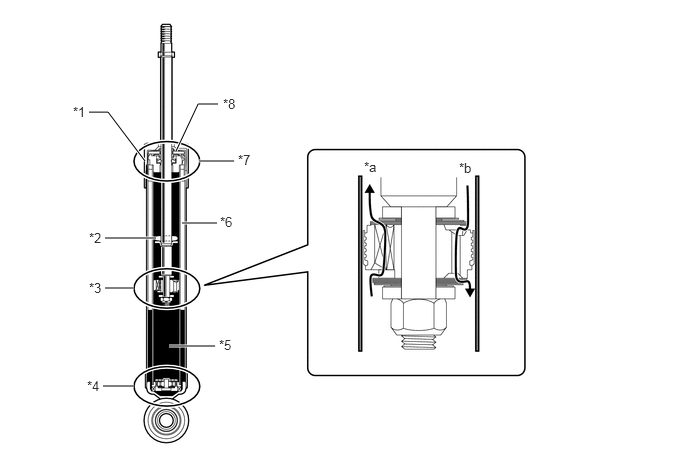
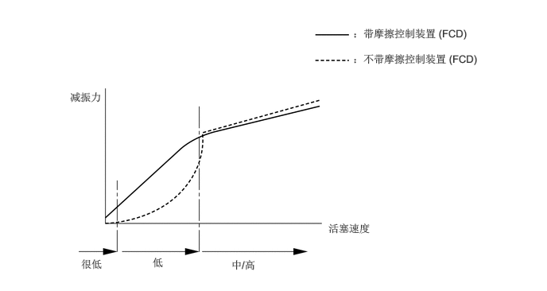
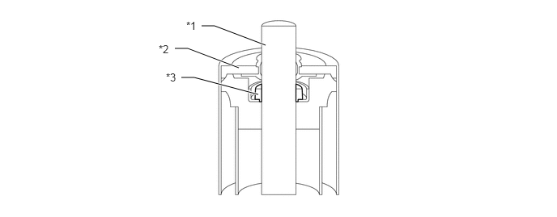

构造
优化了螺旋弹簧的弹簧刚度以实现卓越的可控性和乘坐舒适性。
后螺旋弹簧顶端和底端配有弹簧隔振垫，确保了卓越的振动抑制效果。
采用低压 (N2) 气密型后减振器以实现高度可控性、行驶稳定性和乘坐舒适性。
为了避免危险状况的发生，在废弃密封有低压 (N2) 气体的后减振器总成之前，确保排空后减振器总成内的气体。有关详情，请参考修理手册。
减小悬架摩擦，使减振器移动更自由。减振器配有摩擦控制装置 (FCD) 和离心式活塞阀，即使减振器低速运转也能确保适当的减振力。
由于减振器极低速运转时难以获得减振力，所以采用了摩擦控制装置 (FCD) 以消除不必要的移动，即使减振器低速运转也能确保线性减振。
减振器中高速运转时（常用来吸收较大的冲击），减振力受限以减少输入冲击。这有助于平稳支持驾乘，带来高度的驾乘舒适性。

| *1 | 减振器盖 | *2 | 回跳弹簧 |
| *3 | 离心式活塞阀 | *4 | 底阀 |
| *5 | 油 | *6 | 低压 (N2) 气体 |
| *7 | 摩擦控制装置 (FCD) | *8 | 油封 |
| *a | 延伸通道 | *b | 压缩通道 |

采用了摩擦控制装置 (FCD)，可改善平稳驾驶感和减少高频范围内的振动，实现了线性转向感。

| *1 | 减振器杆 | *2 | 油封 |
| *3 | 摩擦控制装置 (FCD) | - | - |